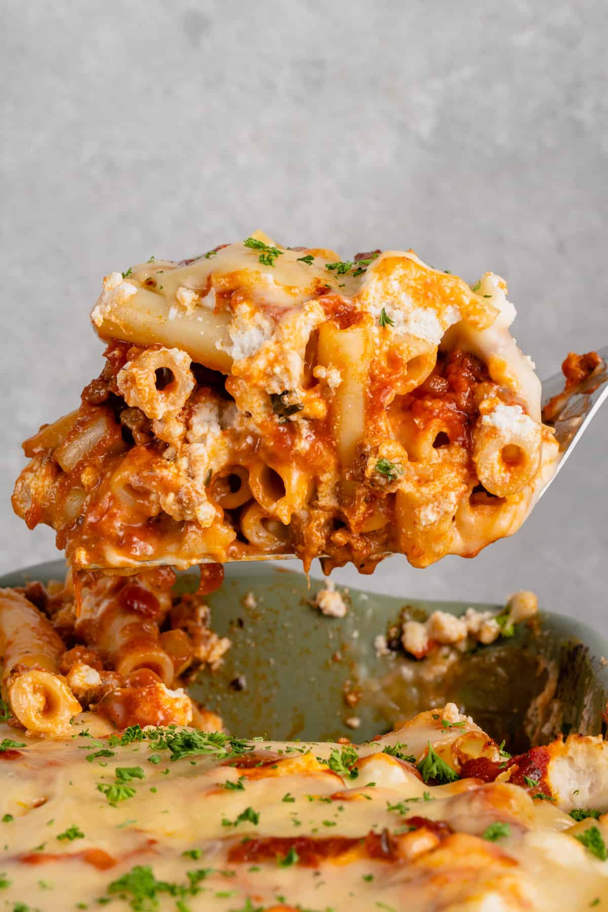

Home
Baked Ziti

Description
This baked ziti is always a hit! A lady I worked with brought this in one day, and everyone loved it. Now it is
the favorite of all my dinner guests. I have made this also without the meat, and it is well received.
Ingredients
- Ziti Pasta
- Onion
- Ground Beef
- Spaghetti Sauce
- Provolone Cheese
- Sour Cream
- Mozzarella Cheese
- Parmesan Cheese
Steps
- Boil water and cook ziti pasta.
- Brown ground beef and onion in skillet
- Stir in spaghetti sauce and simmer for 15 minutes
- Preheat the oven to 350 degrees
- Spread ziti onto a baking dish. Top with provolone cheese, sour cream, meat sauce,
then with the rest of the ziti, mozzarella cheese, and meat sauce. Grate parmesan cheese over the dish.
- Bake in the oven for 30 minutes.
Credit
Baked ziti recipe sourced from allrecipes